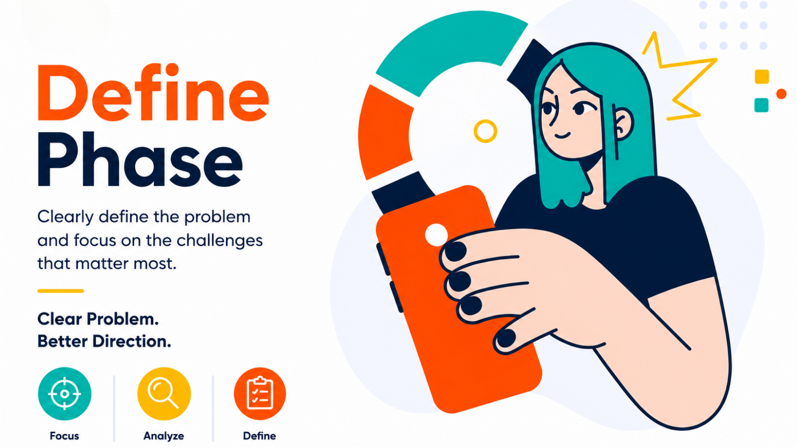

EN
EN
Phase 02 · Define
Turn empathy evidence into a clear problem.
In this phase, your team reviews research findings, identifies patterns, writes a user-centred problem statement and creates HMW questions before moving to Ideation.
What is Define?
Define is where your team makes sense of everything learned during Empathy. You analyse interviews, maps and personas to frame ONE clear problem statement that captures the real user need.
What students need to do
- Review Empathy Map, Persona and User Needs Summary from Phase 01.
- Identify repeated patterns across all interviews.
- Write a Point of View statement using [user] needs [need] because [insight].
- Generate 5 How Might We questions to prepare for Ideation.
- Submit for Supervisor Gate 1 before starting Phase 03.
Common mistakes to avoid
- Do not include the solution inside the problem statement.
- Do not make the scope too broad or too narrow.
- Do not jump straight into brainstorming before HMW.
- Do not base the problem on assumptions. Use research evidence.
Define
Templates
Use the Define templates to convert Empathy evidence into a focused problem. The sequence is: review evidence → find patterns → write POV → define scope → generate HMW → submit Gate 1.
5
Problem Statement
6
How Might We
G1
Supervisor Gate